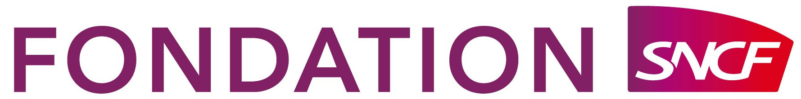
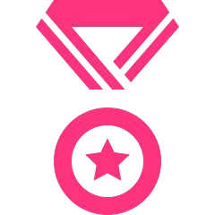

1 er et 2 avril 2016
IN’ESS Narbonne
un évènement financé par
L’économie du partage, c’est quoi ?
C’est réinventer grâce au numérique de nouveaux usages de consommation en prenant en compte l’ impact social et environnemental.
Revente, don, troc, location ou emprunt, réutilisation, recyclage, mutualisation, intelligence collective, exigence écologique, etc.
Voici quelques exemples de démarches où le numérique peut contribuer à améliorer le bien-être & le mieux vivre ensemble.
Ses moteurs ?
- Créer des rapports de proximité entre les individus,
- Consommer différemment et localement,
- Créer du lien social, du partage,
- Permettre aux citoyens et aux consommateurs de devenir acteur plus responsables et contributeurs.
Particuliers, entreprises, associations, services publics, nous sommes tous concernés !
un évènement financé par
Un concept innovant et collaboratif au service de l’intelligence collective
TEAM
- Des étudiants et apprenants issus de différentes écoles et universités (développeurs, graphistes, designers, sociologues, juristes, etc.)
- Une pluridisciplinarité, gage de réussite
- La possibilité d’embarquer des salariés dans cette aventure
WORK
- Deux jours de travail intensif
- Des mentors pour guider les candidats dans le développement de leur projet : design, business, juridique, technologie...
- Une ambiance chaleureuse et festive
AWARD
- Un jury de professionnels
- Des parrains de renom
- Des récompenses attractives
Un hackathon ouvert sur de nombreuses thématiques
Énergie : réseaux décentralisés d’énergie, logistique collaborative
Mobilité partagée : covoiturage, autopartage
Alimentation : Amap, lutte contre le gaspillage alimentaire, circuits courts
Partage entre particuliers : plateformes de dons, de prêts ou d’entraide entre voisins
Économie circulaire : recyclage, lutte contre l’obsolescence programmée, accorderie
Financement : monnaies alternatives, crowdfunding, blockchain
Tourisme responsable : hébergements chez les particuliers, promotion du territoire par les habitants
un évènement financé par
Un Jury de Qualité
(Secrétaire d’État au numérique)
(CEO Blablacar)
(CEO Bedycasa)
(CEO Le Comptoir de l’innovation)
(Fondateur OuiShare)
(CEO Simplon.co)
un évènement financé par
 Quatre prix
Prix du jury
Le coup de coeur du jury en fonction de différents critères :
originalité, intérêt, viabilité, faisabilité technique, respect des consignes, etc.
Prix Idée
Le jury évaluera de manière globale l’idée de produit/service la plus originale, viable et intéressante au regard du thème choisi.
Prix Dev
Le Jury évaluera la qualité, la frugalité et la propreté du code.
Prix Créativité
Le Jury évaluera la créativité des visuels, la technique, le style graphique et la clarté du propos...